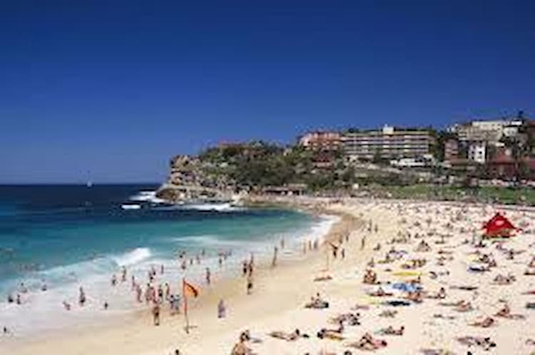

Sydney is a city where the weather and culture blend beautifully. On a typical summer day, the sun shines brightly over Sydney Harbour, and locals gather at Bondi Beach to enjoy the warm waves and the vibrant atmosphere. Meanwhile, the city's multicultural vibe shines through in places like The Rocks, where street performers, food trucks, and art galleries reflect the diverse heritage of its residents. i love these moments about the city, the light sun and the bright nights, really it's amazing when you experience all these at the same time.
OMG! I love the people though there are too many different believes and understanding, well one just have to blend alongside the trend.
